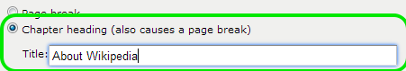
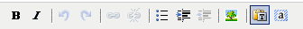
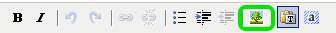
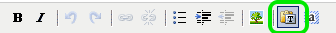
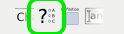
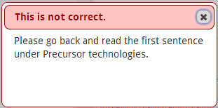
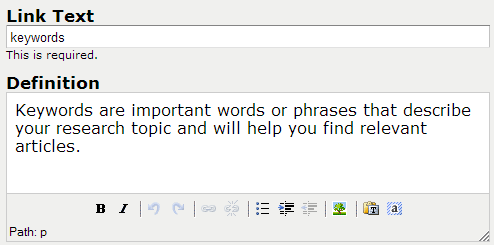
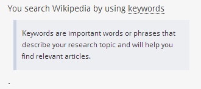

Creator Guide
To Get Started:
- Log-in (URL to be provided by your systems staff)
- Click the Create a tutorial button
Set up Your Tutorial
- Tutorial Title: Enter the title of your tutorial here – there is a 75 character limit.
- Published URL: This box will show you how the tutorial’s URL will look once it is published.
- Contact Name, Email, and Phone (all are optional): The contact name and email are used by the software to route feedback. Phone is an additional contact point.
- Right Frame Starting URL: Paste in the URL of the page to be displayed in the right frame where you want your tutorial to begin.
- Linked table of contents: Clicking this box will result in a linked table of contents appearing under the Contents box in the upper left corner of the tutorial. (The table of contents is automatically generated by using the names of the Chapter Headings you will create in the next steps.)
- Description: This allows you to create metadata that will describe what the tutorial will teach.
Once you have set up your tutorial, click the Create button at the bottom of the screen.
Build Your Content
The tutorial creator is a simple text box with a WYSIWYG editor at the bottom. You can put many types of content directly in the box; we usually start with a chapter heading and add introductory text. Any of the content can be moved by clicking and then dragging where you would like it to be. To edit existing content, double-click, make changes, and then click Update.
Organize Your Content
Guide on the Side offers two options for sectioning your content. A chapter heading and a page break. Chapter heading provide a means of orienting your users. If you have a table of contents enabled, headings will serve as a navigational aid. The same chapter heading will remain in place for all content in that section (even if you add a page break.) Page breaks help you divide content into sequential sections.
To add a page break:
- Select the Ch button on the editor.
- Select the Page break radio button.

To create a chapter:
- Select the Ch button on the editor
- Select the Chapter heading radio button.
- Type a chapter heading.

Add Text
Type or paste text straight into the text box.

Use the WYSIWYG editor to:
- Make text bold
- Italicize text
- Insert & remove a hyperlink
- Add bullets
- Indent any text you type in the box.
- Outdent any text you type in the box.
- Select everything in the text box.

Add an Image
- Place your cursor where you would like to have the image inserted.
- Click the tree icon on the editor.
- Click Choose file to locate your image, then click Open.
- Once you have selected your image, click Upload.
- You can use the Appearance tab to edit the image size and alignment.
- To ensure that users of assistive technology can make sense of this information, use the Image Description field to provide a descriptive summary of the image.
- The Title field is displayed when a user with a mouse hovers over the image. Leave this blank if the title and description would be redundant if read together.
- Click Insert


Maintain Your Source Formatting
The Guide on the Side software is automatically set to remove all formatting from any text that you copy and paste into the editor.
Follow these steps if you want to maintain your source formatting:
- Click the T icon to toggle the text formatter to “off” (the grey box will be removed from the T icon when the text is toggled off).
- Paste in your text.
- Click the T box again to return to the default.

Add a Question
Multiple-choice questions can be inserted anywhere in the tutorial. Questions inserted into the tutorial are not graded.
- Select the “?” button on the editor.
- Type questions into the main box.
- Type answers in the lower boxes on the left.
- Type responses in the lower boxes on the right.
- Use the radio buttons to select the correct answer.
- Add additional response boxes by clicking the white ”+” link in the lower left corner.
- Click the “x” to the right of a response box to remove it.
- When finished, click Insert button at the bottom to add the question to the tutorial.
- To edit an existing question, double-click on it to open it, make any desired changes, then click Update (or Cancel).


Feedback displays in a dialog box with the header at the top and the response text following.

Add a Free Response Box
Free Response boxes are a great way of providing students an opportunity to refelect more deeply on their learning process. Free response boxes are not auto-graded, so any feedback given needs to be done so by an instructor.
- Select the Free Response Box button.
- Determine if you want a one line or multiple line response.
- Type your prompt.
- Type a starting phrase (optional).


Students see the prompt, followed by the initial text in where they would type their response.

Add a Definition Box
Definition boxes are a useful way to provide additional information without taking up screen space.
- Select the square definition icon.
- Type the text that you would like to define in the Link Text box.
- Type in the definition.
- Click Insert.


Students see the term displayed as a link, clicking the link reveals the definition.

Add a Quiz
Quizzes provide students an opportunity to test their knowledge and receive a grade.
- Click the Add quiz button.
- The functionality is the same as the editor in the tutorial creator. However, the quiz questions do not provide feedback, just a grade.
- When you are done adding content to your quiz, click Save.
Quizzes are optional. Upon completing the quiz, students are able to input their name and multiple email address (to send to a professor, or GA, etc.) The Add quiz button changes to Edit quiz once a quiz has been added. Quiz settings appear in the tutorial information only after the quiz has been added. Click Edit information to view or change them. (Default settings are to provide Quiz certificate, allow users to email themselves, and to include their grades.)
Tutorial controls
Use the blue buttons on the tutorial edit page to:
- Preview your tutorial to see how the tutorial will look to your students.
- Publish your tutorial to make it available in the tutorial listing. Once a tutorial is published, the button changes to Unpublish.
- Use Edit information to change the starting URL, edit contact names, and quiz and certificate of completion settings.
Share Your Tutorial
To share an individual tutorial:
- Click on any tutorial title to view the public version or use the preview button
- Copy the URL from the location window
To share all your tutorials:
- From the creator dashboard select “View the public interface” at the bottom of the creator list
- Use the URL that appears in the location window